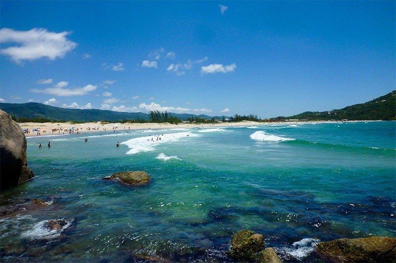

Santa Catarina é um estado localizado no Sul do Brasil, com capital em Florianópolis. Conhecido por suas praias como Joaquina, Lagoa da Conceição e Bombinhas, o estado também é famoso por suas montanhas e festas típicas, como a Oktoberfest, que reflete a forte influência alemã. A cultura catarinense é marcada pelo folclore, como a dança do choro e o artesanato em madeira. Sua economia é diversificada, com destaque para a indústria, especialmente no setor de textil e moveleiro, além da agricultura, com produção de couve-flor, maçã e suínos. O turismo também é um dos principais motores da economia, atraindo visitantes para suas praias, cidades históricas e serras.
